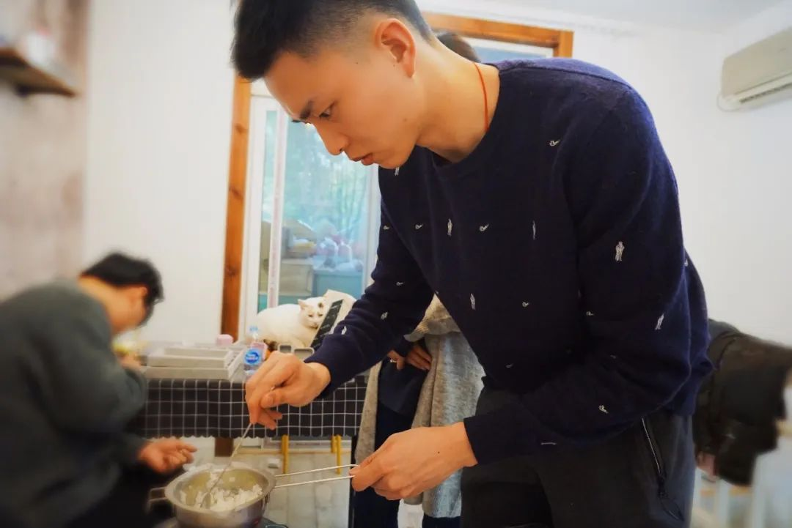
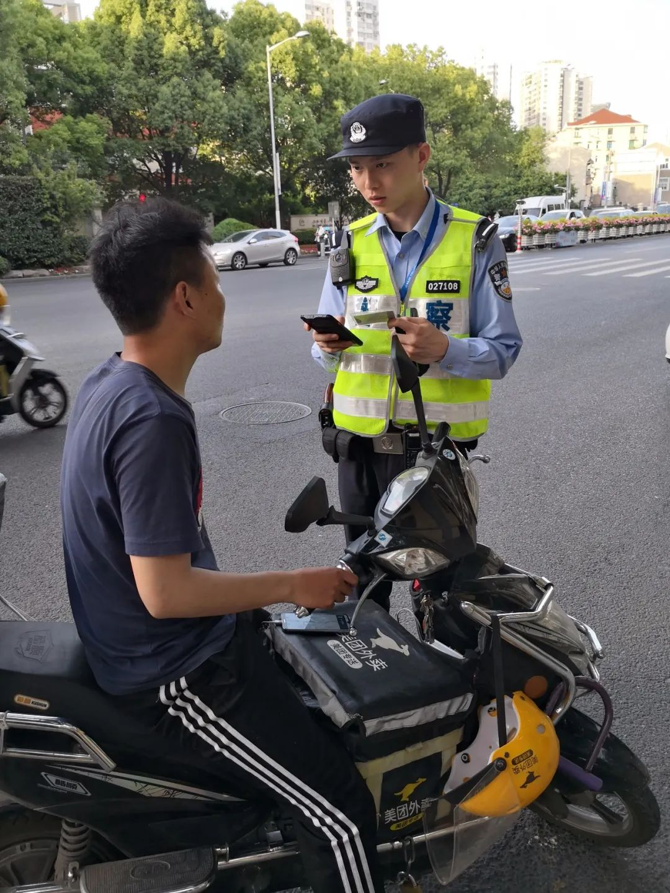
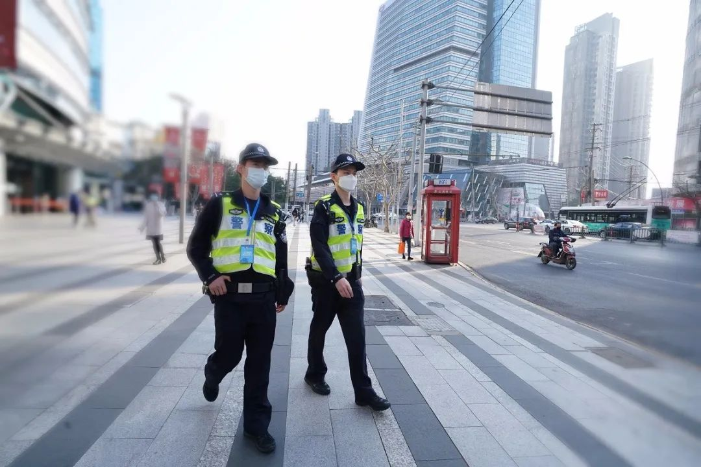

229家A股公司年报推迟披露 ，多家湖北企业考虑延期
原文链接 备份链接 疫情不仅严重影响了企业复工，多家A股公司年报披露也因此延期。作为此次疫情重灾区，湖北省内上市公司年报披露所受影响正逐步显现 文 |《财经》记者 张建锋 王颖 编辑 | 陆玲 突然袭来的新型冠状病毒，不仅严重影响了企业复 …

如今巡警更多面对的是“家长里短的琐事”，面对的是“被柴米油盐包裹的普通人”，因此要学会刚柔并济。
记者 | 应 琛
近日，静安区曹家渡派出所的一位年轻民警因其“神仙颜值”登上了网络热搜。但这回让他上热搜的却是一名需要送医的男子。
原来这段在网络热传的视频来自一档叫作《派出所的故事2019》纪实性栏目。视频中，一名男子将要被120拉到医院就诊，接警后的曹家渡派出所民警周世奇与同事一起前来查看。该男子看到周世奇出现后，直接就叫周世奇“小唐哥”，称他是大家的“唐僧”，还连连称赞周世奇“真的很帅气”。
周世奇接警时的专业与细致，让许多网友印象深刻。在这档节目中与他一起走红的还有他的搭档兼“师父”马晓亮。默契的配合，加上帅气的形象，也让两人成为了网友们心目中超有安全感的“男神”。
要说周世奇有多少红，记者在朋友圈发了一段“小唐哥”视频后，收到的评论基本上都是“要去采访小唐哥了吗”“这是上海那位有微博超话的警察小哥哥吗”“羡慕~可以不用在曹家渡‘犯罪’就见到本人”……

在街面巡逻的周世奇（左一）和马晓亮 沈琳｜摄
这不昨天（2月24日），《新民周刊》记者走进了曹家渡派出所，不仅见到了周世奇与马晓亮，还跟着他们做了一次街面巡逻。#千万不要太羡慕嫉妒恨哦#
1
1993年出生的周世奇是上海静安公安分局曹家渡派出所的一名民警。说起选择当警察的原因，他坦言是受到了TVB港剧的影响，“里面的阿Sir都很帅，尤其是穿上警察制服的时候”。再加上，男孩总是有一个想要惩恶扬善的“英雄梦”，因此从高中起，他就立志要成为一名人民警察。

生活中的周世奇
2016年从警校毕业的那年，正巧遇上了上海的交通大整治，周世奇先是当了一年的交警。之后，他便来到了曹家渡派出所，被安排在了马晓亮所在的警组，开始了一名巡逻警察的生涯。
在周世奇眼中，马晓亮既是“师父”又是“大哥”。“在工作业务上有什么不懂的，我都会向他请教。因为兴趣爱好差不多，有些生活上的事情，我也会找马哥商量。”周世奇说，马晓亮就是他的启蒙警长。
刚来曹家渡不久，周世奇就处置过一起棘手的纠纷警情，当时他原本是和另外一名同事前往现场，但马晓亮也主动跟去了。前脚刚踏进小区，周世奇就听到报警人在阳台上高呼“救命”，原来当事双方因为房产闹矛盾，后引发了肢体冲突。周世奇他们到场后，当事一方情绪更加激动了，当着民警的面就要冲上去打对方。“当时已经凌晨4点了，但周边邻居都被吵醒在楼道里围观，现场比较混乱而且有人受伤，所以马哥第一时间通知指挥中心联系了医院，后将当事双方隔开后单独谈，因为家事难了，所以马哥一面把法律后果说清楚一面又从处理方法上给建议，待双方冷静下来后，听了有理也就不再闹了。”

周世奇 沈琳｜摄
从这件事后，周世奇觉得只要有马晓亮在身边，心里就特别有底气，“马哥‘基本功’扎实，平时也很撑我们。有时候听到一些比较复杂的警情时，他都会主动增援过来”。
而当问起马晓亮如何评价周世奇时，马哥直呼：“小周同学太优秀了。”
在马晓亮眼中，周世奇刚到所里时比较腼腆，在一些处警的过程中碰到比较难缠的人或当事人比较多的情况，会有一点束手束脚，“可能也有一些‘偶像包袱’”。

但大概仅仅用了一年时间，马晓亮就发现其实已经没有什么东西可以教他了，“周世奇很聪明。现在基本上他在外面巡逻或处警时，有他自己的处置方式，完全能够独当一面。他也有超越同龄人的成熟和稳重。在我有事请假时，我只要稍微关照一下，有他在，我就能很省心”。

周世奇参加泥浆越野综合障碍跑
当然，私下里的周世奇，和大多数男孩一样，爱打篮球，也爱打游戏，平时也会刷微博和抖音。
2
周世奇坦言，他并没有想到自己会“再次”走红，“因为电视台拍摄完距离播出已经过了大半年了。其间，我们接警处置了很多案件，说实话早就忘记了这回事了”。

另一面的周世奇
为什么是“再次”？事实上，此前一部《巡逻现场实录2018》已经让周世奇收获迷妹无数。而曹家渡派出所巡逻队更被网友称为“网红巡警天团”。

周世奇劝解走失女孩
在片中，他们有人因高颜值“圈粉”，有人因救猫被赞“暖心男神”，也有人爱妻顾家被弹幕“表白”……

上海第一代巡警姜慧
而说起他们的师父，更是大名鼎鼎的上海第一代巡警姜慧。要知道姜慧出名的时候，社交媒体还没有像现在这么发达，而网上已经有不少他的“传说”，人送名号“马路神探”，名副其实的“初代网红”。毒贩、持械歹徒、爆炸物……在姜慧26年的巡逻生涯中都曾遇到。
“传帮带”是曹家渡派出所历来的优良传统，如今已是副所长的姜慧将接力棒传到了马晓亮、周世奇的手中。
在姜慧看来，如今巡警更多面对的是“家长里短的琐事”，面对的是“被柴米油盐包裹的普通人”，因此要学会刚柔并济。
3
目前正处于新冠肺炎疫情防控时期，周世奇告诉记者，疫情期间出现了不少新的警情。

周世奇处警中
2月初的某个夜班，周世奇和马晓亮就接到有人报警称，辖区内某家酒吧存在噪声扰民的情况。当时已经是凌晨3点多，两人迅速到达现场，发现酒吧确实存在营业行为。
“按照相关规定，例如酒吧等一些娱乐性场所那个时候还不能营业。”周世奇表示，当时酒吧内大约有30人在喝酒聊天，基本上没有戴口罩，“尤其在疫情期间，这样的行为特别危险。但酒吧内的客人大多是外国人，可能也不太了解目前防疫的一些规定”。
周世奇和马晓亮先对顾客进行了相关的告知并做了清场，又责令酒吧立即停止营业。后来，他们又联系到酒吧的负责人，对他进行了教育，以及后续的处理。
此外，因为外来人员小区不让进、外卖不让进、快递不让进等情况产生的纠纷也时有发生；还比如，重点地区返沪人员被拦在小区门口被要求隔离的情况也很多，这时也需要民警到场维持秩序。
“我们还碰到过，宾馆出于安全考虑不让一些外地来的人员入住，但这是一个老百姓的正常需求，我们肯定要保证的，所以要帮他们解决晚上住哪里。”周世奇说，他之前还在抖音上看到一个顾客因为进店买东西没戴口罩，店员拒绝卖给他，双方产生纠纷以后报警的短片，“民警到场后的处置方法，我觉得也是我们工作上可以学习的”。
曾经“抓坏人”是人们对警察这一职业最朴素的认知，而电视剧里的“大场面”也是周世奇的心之所向，但真正工作后，周世奇说，他更希望这样的“大场面”还是不要出现的好。

马晓亮与周世奇（右一）在街面巡逻 沈琳｜摄
当天的巡逻过程中，周世奇发现，街上的行人明显多于之前。他也提醒道：“疫情期间，希望广大市民可以减少出门，减少聚会，勤洗手，出门务必戴口罩，一起坚持到疫情结束，全民共同做好疫情的防控工作。”

征集令
《新民周刊》现面向全国征集新冠肺炎采访对象和真实故事：
如果你是参与抗击新冠肺炎疫情的医护人员或其家属，我们希望聆听你的“战疫”故事，也希望传达你的诉求。
如果你是确诊、疑似患者本人或家属，我们希望了解你和家人如何“抗疫”的过程，让外界了解你的真实经历。
如果你是疫情严重地区的普通市民，我们希望展现你的乐观，并倾听你所需的帮助。
如果你是公共服务人员或各类捐助者，我们希望看到你的“最美逆行”，记录下你的无私。
……
抗击新冠肺炎疫情，我们诚征对疫情了解的社会各界人士，提供相关线索，说出你的故事，让我们用新闻留存这一切。
《新民周刊》新冠肺炎线索征集值班编辑联系方式（添加时请简要自我介绍）：
周一：应 琛 微信号：paulineying0127
周二：金 姬 微信号：gepetta
周三：黄 祺 微信号：shewen-2020
周四：周 洁 微信号：asyouasyou
周五：孔冰欣 微信号：kbx875055141
周六：吴 雪 微信号：shyshine1105
周日：姜浩峰 微信号：jianggeladandong
✳如你需要捐赠物资，可与以下两位工作人员联系:王勇：WangYong-SH 吴轶君：rommy150708（添加时请注明“捐物资”，方便工作人员快速通过您的申请，谢谢。）
新闻是历史的底稿，你们是历史的见证者。期待你的故事、你的线索！

▼
大家还都在看这些
▼
新民周刊所有平台稿件， 未经正式授权
一律不得转载、出版、改编或进行
与新民周刊版权相关的其他行为，违者必究


原文链接 备份链接 疫情不仅严重影响了企业复工，多家A股公司年报披露也因此延期。作为此次疫情重灾区，湖北省内上市公司年报披露所受影响正逐步显现 文 |《财经》记者 张建锋 王颖 编辑 | 陆玲 突然袭来的新型冠状病毒，不仅严重影响了企业复 …
原文链接 备份链接 ********** *****如在看素材、写脚本的过程中，秦晓宇不断地感受到疫情之下人们生发出的恐惧和爱意。他坚信，这种爱意，恰恰是我们克服恐惧，克服冷漠、自私和敌意的力量。***** 《余生一日》投稿作品截图。 …
原文链接 备份链接 2020年注定不平凡。武汉封城、公众场所关闭、复工日期不断推迟……疫情让武汉人的生活被迫减速甚至停滞，而一批又一批的医护人员和志愿者逆行奔赴战场。 疫情期间，我们见证了无数感人的英雄故事，也 …
原文链接 备份链接 世界卫生组织官员对韩国和伊朗等地爆发新冠病毒疫情表示担忧，但表示情况尚未上升到大流行病的程度。在美欧金融市场，这一模式已变得清晰：新增确诊病例数=增加的市场恐慌=疲弱的资本市场。这一模式会否必然在中国出现，尚待观察 …
原文链接 备份链接 2020-02-25 21:54:22新京报 记者：杜雯雯 编辑：陈晓舒 2020-02-25 21:54:22新京报 记者：杜雯雯 我们上海公共卫生中心在1月5日提交正式的报告，从我们公共卫生的角度，我们的科学家、我 …